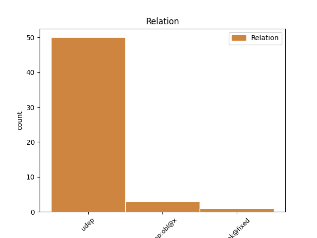
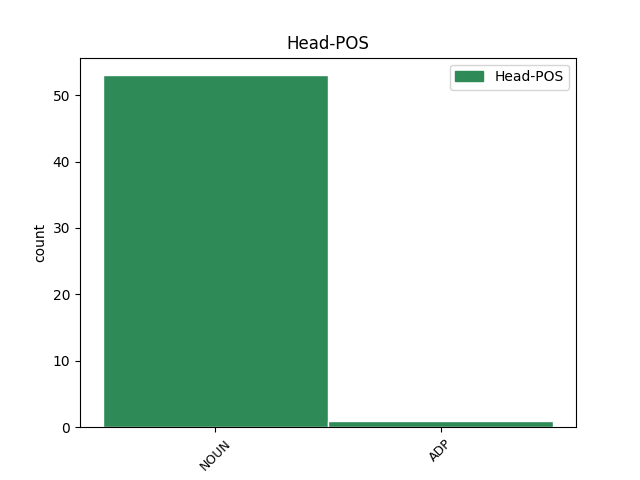
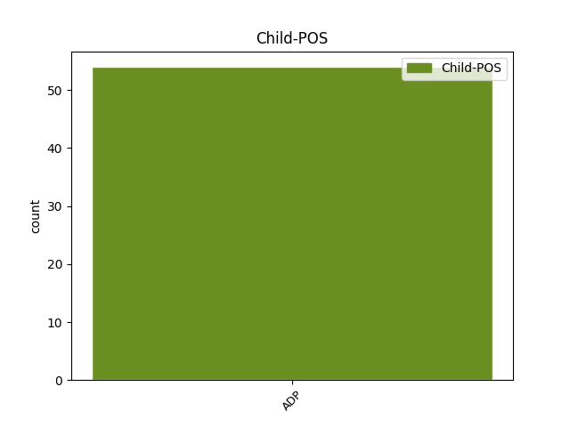

Distribution of features within this leaf



Agreement Rules sorted by frequency.
- When the dependent token is the underspecified dependency(udep) of the head token, and the dependent token is ADP.
1 Ged _ _ _ _ 0 _ _ _
2 a _ _ _ _ 0 _ _ _
3 bhuail _ _ _ _ 0 _ _ _
4 esan _ _ _ _ 0 _ _ _
5 air _ _ _ _ 0 _ _ _
6 an _ _ _ _ 0 _ _ _
7 riaghaltas _ _ _ _ 0 _ _ _
8 an _ _ _ _ 0 _ _ _
9 siud _ _ _ _ 0 _ _ _
10 ’s _ _ _ _ 0 _ _ _
11 an _ _ _ _ 0 _ _ _
12 seo _ _ _ _ 0 _ _ _
13 , _ _ _ _ 0 _ _ _
14 cha _ _ _ _ 0 _ _ _
15 robh _ _ _ _ 0 _ _ _
16 mòran _ _ _ _ 0 _ _ _
17 brìgh _ _ _ _ 0 _ _ _
18 anns _ _ _ _ 0 _ _ _
19 na _ _ _ _ 0 _ _ _
20 thubhairt _ _ _ _ 0 _ _ _
21 e _ _ _ _ 0 _ _ _
22 , _ _ _ _ 0 _ _ _
23 oir _ _ _ _ 0 _ _ _
24 tha _ _ _ _ 0 _ _ _
25 e _ _ _ _ 0 _ _ _
26 follaiseach _ _ _ _ 0 _ _ _
27 nach _ _ _ _ 0 _ _ _
28 eil _ _ _ _ 0 _ _ _
29 caochladh _ _ _ _ 0 _ _ _
30 a’ _ _ _ _ 0 _ _ _
31 dol _ _ _ _ 0 _ _ _
32 a _ _ _ _ 0 _ _ _
33 thighinn _ _ _ _ 0 _ _ _
34 air _ _ _ _ 0 _ _ _
35 a’ _ _ _ _ 0 _ _ _
36 chàirdeas _ _ _ _ 0 _ _ _
37 a _ _ _ _ 0 _ _ _
38 tha _ _ _ _ 0 _ _ _
39 eadar _ _ _ _ 0 _ _ _
40 a’ _ _ _ _ 0 _ _ _
41 phàrtaidh pàrtaidh NOUN Ncsmn Case=Nom|Gender=Masc|Number=Sing 0 _ _ _
42 aige aig ADP Pr3sm Gender=Masc|Number=Sing|Person=3 41 udep _ _
43 ’s _ _ _ _ 0 _ _ _
44 na _ _ _ _ 0 _ _ _
45 Làbaraich _ _ _ _ 0 _ _ _
46 . _ _ _ _ 0 _ _ _
1 Còmhla còmhla ADP Pr3sm Gender=Masc|Number=Sing|Person=3 0 _ _ _
2 ris ri ADP Pr3sm Gender=Masc|Number=Sing|Person=3 1 unk@fixed _ _
3 air _ _ _ _ 0 _ _ _
4 pilleig _ _ _ _ 0 _ _ _
5 bha _ _ _ _ 0 _ _ _
6 ban-chompanach _ _ _ _ 0 _ _ _
7 Inis _ _ _ _ 0 _ _ _
8 . _ _ _ _ 0 _ _ _
1 Tha _ _ _ _ 0 _ _ _
2 an _ _ _ _ 0 _ _ _
3 taghadh _ _ _ _ 0 _ _ _
4 airson _ _ _ _ 0 _ _ _
5 dreuchd _ _ _ _ 0 _ _ _
6 Phaddy _ _ _ _ 0 _ _ _
7 Ashdown _ _ _ _ 0 _ _ _
8 a' _ _ _ _ 0 _ _ _
9 dùnadh _ _ _ _ 0 _ _ _
10 aig _ _ _ _ 0 _ _ _
11 meadhon _ _ _ _ 0 _ _ _
12 latha _ _ _ _ 0 _ _ _
13 an-diugh _ _ _ _ 0 _ _ _
14 , _ _ _ _ 0 _ _ _
15 agus _ _ _ _ 0 _ _ _
16 coltas coltas NOUN Ncsmn Case=Nom|Gender=Masc|Number=Sing 0 _ _ _
17 ann ann ADP Pr3sm Gender=Masc|Number=Sing|Person=3 16 comp:obl@x _ _
18 aig _ _ _ _ 0 _ _ _
19 an _ _ _ _ 0 _ _ _
20 ìre _ _ _ _ 0 _ _ _
21 seo _ _ _ _ 0 _ _ _
22 gur _ _ _ _ 0 _ _ _
23 e _ _ _ _ 0 _ _ _
24 Mgr _ _ _ _ 0 _ _ _
25 Ceannadach _ _ _ _ 0 _ _ _
26 a _ _ _ _ 0 _ _ _
27 bhitheas _ _ _ _ 0 _ _ _
28 'na _ _ _ _ 0 _ _ _
29 àite _ _ _ _ 0 _ _ _
30 . _ _ _ _ 0 _ _ _
Disagree Examples:
1 Dh'innis _ _ _ _ 0 _ _ _
2 Tormod _ _ _ _ 0 _ _ _
3 eachdraidh _ _ _ _ 0 _ _ _
4 mhì-chneasda _ _ _ _ 0 _ _ _
5 nan _ _ _ _ 0 _ _ _
6 clachan _ _ _ _ 0 _ _ _
7 , _ _ _ _ 0 _ _ _
8 is _ _ _ _ 0 _ _ _
9 nan _ _ _ _ 0 _ _ _
10 craobh _ _ _ _ 0 _ _ _
11 annasach _ _ _ _ 0 _ _ _
12 , _ _ _ _ 0 _ _ _
13 dorcha _ _ _ _ 0 _ _ _
14 a _ _ _ _ 0 _ _ _
15 bha _ _ _ _ 0 _ _ _
16 nan _ _ _ _ 0 _ _ _
17 seasamh _ _ _ _ 0 _ _ _
18 làimh làimh NOUN Ncsfd Case=Dat|Gender=Fem|Number=Sing 0 _ _ _
19 riutha riutha ADP Pr3p Number=Plur|Person=3 18 udep _ SpaceAfter=No
20 , _ _ _ _ 0 _ _ _
21 is _ _ _ _ 0 _ _ _
22 dh'innis _ _ _ _ 0 _ _ _
23 e _ _ _ _ 0 _ _ _
24 i _ _ _ _ 0 _ _ _
25 leis _ _ _ _ 0 _ _ _
26 a' _ _ _ _ 0 _ _ _
27 bharrachd _ _ _ _ 0 _ _ _
28 toileachais _ _ _ _ 0 _ _ _
29 chionn _ _ _ _ 0 _ _ _
30 's _ _ _ _ 0 _ _ _
31 gu _ _ _ _ 0 _ _ _
32 robh _ _ _ _ 0 _ _ _
33 tlachd _ _ _ _ 0 _ _ _
34 Inis _ _ _ _ 0 _ _ _
35 a' _ _ _ _ 0 _ _ _
36 dol _ _ _ _ 0 _ _ _
37 am _ _ _ _ 0 _ _ _
38 meud _ _ _ _ 0 _ _ _
39 an _ _ _ _ 0 _ _ _
40 coimeas _ _ _ _ 0 _ _ _
41 ri _ _ _ _ 0 _ _ _
42 mì-thlachd _ _ _ _ 0 _ _ _
43 Iain _ _ _ _ 0 _ _ _
44 . _ _ _ _ 0 _ _ _
1 Bha _ _ _ _ 0 _ _ _
2 Iain _ _ _ _ 0 _ _ _
3 aig _ _ _ _ 0 _ _ _
4 Trianaon _ _ _ _ 0 _ _ _
5 mu _ _ _ _ 0 _ _ _
6 mheadhan-oidhche _ _ _ _ 0 _ _ _
7 , _ _ _ _ 0 _ _ _
8 a' _ _ _ _ 0 _ _ _
9 mìneachadh _ _ _ _ 0 _ _ _
10 dha _ _ _ _ 0 _ _ _
11 fhèin _ _ _ _ 0 _ _ _
12 gum _ _ _ _ 0 _ _ _
13 b' _ _ _ _ 0 _ _ _
14 e _ _ _ _ 0 _ _ _
15 an _ _ _ _ 0 _ _ _
16 dealta _ _ _ _ 0 _ _ _
17 reòthte _ _ _ _ 0 _ _ _
18 a _ _ _ _ 0 _ _ _
19 bha _ _ _ _ 0 _ _ _
20 a' _ _ _ _ 0 _ _ _
21 cur _ _ _ _ 0 _ _ _
22 chrithean crith NOUN Ncpfg Case=Gen|Gender=Fem|Number=Plur 0 _ _ _
23 fuara _ _ _ _ 0 _ _ _
24 air air ADP Pr3sm Gender=Masc|Number=Sing|Person=3 22 udep _ _
25 is _ _ _ _ 0 _ _ _
26 nach _ _ _ _ 0 _ _ _
27 b' _ _ _ _ 0 _ _ _
28 e _ _ _ _ 0 _ _ _
29 nì _ _ _ _ 0 _ _ _
30 mì-nàdarra _ _ _ _ 0 _ _ _
31 sam _ _ _ _ 0 _ _ _
32 bith _ _ _ _ 0 _ _ _
33 . _ _ _ _ 0 _ _ _
1 ' _ _ _ _ 0 _ _ _
2 “ _ _ _ _ 0 _ _ _
3 Fir _ _ _ _ 0 _ _ _
4 mhóra _ _ _ _ 0 _ _ _
5 a’ _ _ _ _ 0 _ _ _
6 bhràighe _ _ _ _ 0 _ _ _
7 " _ _ _ _ 0 _ _ _
8 - _ _ _ _ 0 _ _ _
9 chan _ _ _ _ 0 _ _ _
10 eil _ _ _ _ 0 _ _ _
11 móran móran NOUN Ncsmn Case=Nom|Gender=Masc|Number=Sing 0 _ _ _
12 dhiubh de ADP Pr3p Number=Plur|Person=3 11 udep _ _
13 ann _ _ _ _ 0 _ _ _
14 an _ _ _ _ 0 _ _ _
15 diugh _ _ _ _ 0 _ _ _
16 ; _ _ _ _ 0 _ _ _
17 tha _ _ _ _ 0 _ _ _
18 fhios _ _ _ _ 0 _ _ _
19 agadsa _ _ _ _ 0 _ _ _
20 air _ _ _ _ 0 _ _ _
21 sin _ _ _ _ 0 _ _ _
22 glé _ _ _ _ 0 _ _ _
23 mhath _ _ _ _ 0 _ _ _
24 nan _ _ _ _ 0 _ _ _
25 leigeadh _ _ _ _ 0 _ _ _
26 t' _ _ _ _ 0 _ _ _
27 uabhar _ _ _ _ 0 _ _ _
28 baoth _ _ _ _ 0 _ _ _
29 òg _ _ _ _ 0 _ _ _
30 cothrom _ _ _ _ 0 _ _ _
31 sam _ _ _ _ 0 _ _ _
32 bith _ _ _ _ 0 _ _ _
33 le _ _ _ _ 0 _ _ _
34 t' _ _ _ _ 0 _ _ _
35 eanchainn _ _ _ _ 0 _ _ _
36 ... _ _ _ _ 0 _ _ _
37 ' _ _ _ _ 0 _ _ _
1 Sùilean sùil NOUN Ncpfn Case=Nom|Gender=Fem|Number=Plur 0 _ _ _
2 uabhasach _ _ _ _ 0 _ _ _
3 gorm _ _ _ _ 0 _ _ _
4 ann ann ADP Pr3sm Gender=Masc|Number=Sing|Person=3 1 udep _ SpaceAfter=No
5 . _ _ _ _ 0 _ _ _
1 Ré _ _ _ _ 0 _ _ _
2 nam _ _ _ _ 0 _ _ _
3 bliadhnaichean bliadhna NOUN Ncpfg Case=Gen|Gender=Fem|Number=Plur 0 _ _ _
4 roimhe ro ADP Pr3sm Gender=Masc|Number=Sing|Person=3 3 udep _ _
5 seo _ _ _ _ 0 _ _ _
6 bhathas _ _ _ _ 0 _ _ _
7 a' _ _ _ _ 0 _ _ _
8 sìor _ _ _ _ 0 _ _ _
9 chur _ _ _ _ 0 _ _ _
10 ri _ _ _ _ 0 _ _ _
11 àireamh _ _ _ _ 0 _ _ _
12 nan _ _ _ _ 0 _ _ _
13 croitear _ _ _ _ 0 _ _ _
14 anns _ _ _ _ 0 _ _ _
15 na _ _ _ _ 0 _ _ _
16 trì _ _ _ _ 0 _ _ _
17 bailtean _ _ _ _ 0 _ _ _
18 ris _ _ _ _ 0 _ _ _
19 a _ _ _ _ 0 _ _ _
20 bheil _ _ _ _ 0 _ _ _
21 ar _ _ _ _ 0 _ _ _
22 gnothach _ _ _ _ 0 _ _ _
23 ; _ _ _ _ 0 _ _ _
24 Peighinn _ _ _ _ 0 _ _ _
25 a’ _ _ _ _ 0 _ _ _
26 Chorrain _ _ _ _ 0 _ _ _
27 , _ _ _ _ 0 _ _ _
28 Am _ _ _ _ 0 _ _ _
29 Baile _ _ _ _ 0 _ _ _
30 Meadhonach _ _ _ _ 0 _ _ _
31 agus _ _ _ _ 0 _ _ _
32 Gead _ _ _ _ 0 _ _ _
33 an _ _ _ _ 0 _ _ _
34 t-Saillear _ _ _ _ 0 _ _ _
35 . _ _ _ _ 0 _ _ _